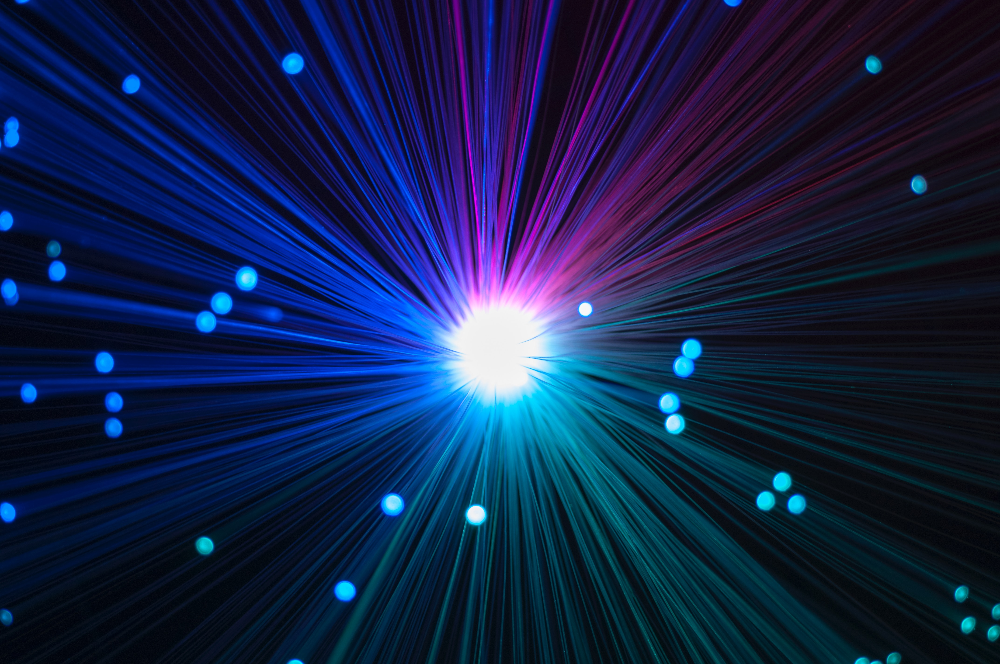

Li-Fi - A Great Revolution
 UmbertoLi-Fi or Light-Fidelity is a new wireless communications technology that mat replace Wi-Fi one day. In contrary to Wi-Fi which uses radio waves Li-Fi uses the visible light spectrum. This means we could literary see it transfer data.
Li-Fi uses visible light to transfer data by flickering LED-lamps very quickly. It’s faster than the human eye can perceive so to us it’ll appear as if the light stream is continuous. Light as you probably know works in different frequencies, with the lower frequencies of visible light leaning on red towards infrared and the higher leaning towards violet towards ultraviolet. Already with one type of light researchers at Oxford University were able to transmit data at approximately 37.4 Gb/s or roughly 4.7 GB/s [1]. When you scale this up to 6 bands they were able to achieve speeds in excess of 224 Gb/s or about 28 GB/s. This means that a 2-hour film assuming a bitrate 40 Mbps[2] would be able to be downloaded in just 1.3 seconds!
6 bands mean 6 different frequencies of light. Light travels as a wave and the frequency of the wave basically means how high points pass a given point in space after a determined time, with the SI unit Hertz or Hz that means highpoints per seconds [3]. As I pointed out earlier Li-Fi uses visible light which means that it can use frequencies between 4*1014 to 7*1014 Hz or 400 Thz to 700 THz.
Both this speed and it using visible light could mean that in maybe a decade we could be looking at a that is no longer connected via Wi-Fi and radio waves but instead Li-Fi. If we switch over entirely towards LEDs in our street lamps, car headlights, malls and room lighting we could be looking at an enormous leap in wireless communications technology. This means you could be getting an internet connection from just walking down a lighted street and if the light source is blocked, hopefully, there is either another light source or the device can seamlessly switch to LTE or 5G. Of course, this will be more difficult to implement in smaller towns and the countryside where infrastructure won’t be as developed. Imagine that in a city you could know almost instantly if something happens as the lights on cars form almost like a cable of Li-Fi where every car and driver would get the necessary information and be able to pass on that information on, for example, an accident that is slowing down the road.
Moving on from just fast and accessible internet in some places like aeroplanes or hospital using Wi-fi is pretty much impossible or needs to be restricted; in aircraft, if you have access to the internet it’s probably going to be both slow and costly. Imagine if you could turn on an overhead LED and get your mini router getting you the latest and greatest memes. In a hospital the problem isn’t being stuck in a flying tin can but rather that Wi-Fi which uses radio waves that can be harmful and disruptive[4].
There are more use cases but I won’t get into them and I instead want to focus on the issues and why it isn’t implemented on a wide-scale yet. First of all, data transmission is easily blocked as the signals can’t penetrate walls or people. Secondly, at this moment we require receivers to be able to decode a data stream. However, in order for this to make its way to a commercial space decoders/receivers must be integrated into our mobile devices which could be proven difficult.
Sources
[1] Fierce Wireless, Oxford researchers use Li-Fi-like system to deliver 100 Gbps https://www.fiercewireless.com/tech/oxford-researchers-use-li-fi-like-system-to-deliver-100-gbps (13.1.2020)
[2] 40 megabit per second divided by 8 bits per byte times 3600 seconds per hour times 2 equals around 36 gigabytes. 36 gigabytes divided by 28 gigabytes per seconds equals 1.28571428571 seconds or approximately 1.3 seconds
[3] CK12, Wave Frequency, https://www.ck12.org/physics/wave-frequency/lesson/Wave-Frequency-MS-PS/ (13.1.2020)
[4] Researchgate, Li-Fi A Revolution In The Field Of Wireless Communicationhttps://www.researchgate.net/profile/Prerna_Goswami/publication/304523747_LI-FI_-_A_REVOLUTION_IN_THE_FIELD_OF_WIRELESS-COMMUNICATION/links/5772247508ae842225ac3358/LI-FI-A-REVOLUTION-IN-THE-FIELD-OF-WIRELESS-COMMUNICATION.pdf?origin=publication_detail (19.2.2020)